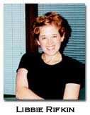
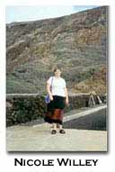

Moving
Borders: a collaborative review
Editor: Mary Margaret Sloan
Talisman House Publishers, New Jersey, 1998. 740 pp.
by Libbie Rifkin, Bebe Barefoot, Katheryn G. Seidler and Nicole Willey
|  |  |
Introductory remarks -- Libbie Rifkin
This collaborative review of Moving Borders: Three Decades of Innovative Writing By Women (editor, Mary Margaret Sloan) grew out of a graduate seminar that I led this past Fall at the University of Alabama, entitled "Gender and Authority in 20th Century Poetry."
A class of thirteen, divided fairly equally between MFA and MA/PhD students, we read deeply in the literary careers of Marianne Moore, Gwendolyn Brooks, Adrienne Rich, and Margaret Walker, but we also sought to broaden our sense of the ways in which both literature and literary history get produced by studying networks of cultural workers. The two periods in which women wielded the most power to create the conditions for their own writing and its reception--early Modernism (1910-30), and the re-emergence of women's poetic communities in the 70s and 80s provided--us with particularly rich territory to explore.
The course hypothesized that these two moments are dialectically interwoven; Modernist innovators such as Moore, H.D., Gertrude Stein, and Lorine Niedecker helped make contemporary women's poetry possible, and in the last thirty years, recovery work by feminist literary historians, critics, and, importantly, poets, helped make Modernist women's innovations legible. Moving Borders, which both participates in and records this dialectic, was our textbook for three weeks of the course. Students struggled with the disjunctive poetries sampled in the anthology, fought over the book's "feminist" goals and uses and, as poets and critics themselves, questioned their roles in furthering the Moving Borders project.
How does the amorphousness or open-form editing of Moving Borders affect our reception of it in the classroom, as students?
I think that the "Poetics and Exposition" section of this anthology is tremendously useful, but the anthology is not organized in a way that makes that apparent. The organization (or lack thereof–there seems to be some kind of "statement" even in that) does not lend itself to classroom use. Perhaps a reorganization would make the anthology more practical. For example, place each writer’s "poetics and exposition" next to her poetry. I also think a "user’s manual" and a list of additional sources would be tremendously useful and would make this anthology less daunting. Sometimes "tried and true" isn’t so bad. I think that innovation for the sake of innovation can defeat a larger and more important purpose.
Also, if Sloan feels the need to justify why she devoted so little space to certain writers (i.e. novelists and dramatists)–decidedly INNOVATIVE writers–then she’s obviously aware that there’s a problem. Perhaps this began as an anthology of POETRY and then she (or they) realized that was too exclusive?
Overall, as I read Moving Borders I got a real sense of significance, of importance in what these women writers, and Sloan herself are trying to do in terms of moving borders, revisioning, redefining, and questioning. Sloan’s construction of the anthology, the font, the typesetting, even the table of contents, visually reinforce the sense of experimentation that the writers do in their poetry and expository writing.
Clearly, Sloan tries not to draw definitive borders in her formation of this anthology. The chronological order of the poetry, the "conversational sequence" of the expository pieces, the lack of biographical information (with the exception of the brief list of publications by each author, their current place of residence, and the small reference Sloan makes regarding the number of writers who are mothers) seek to force the reader to react to the writing and not the authors themselves or their personal lives, which often occurs when critics examine work by women. Even with textual layout, there is a real sense of dissolving borders. On the front cover we encounter the powdery yellow sheen, not pink or blue, but yellow, a color associated with being gender neutral. We also see a collage by Alice Notley, again a symbol of undefined space, of neutrality, the colors blurring.
However, while the borders may begin to blur, they are still present. Sloan does draw a firm line; this anthology only consists of "innovative writing by women." For readers the gender border is clearly defined. Sloan, along with the writers themselves, asks us to change the way we read by manipulating form, text, genre, etc.
While wildly different in look, tone, and theme, virtually all of the Moving Borders selections conform to the principles delineated in Hejinian’s "Rejection of Closure." Sloan might be said to engage in "open text" editing as well. The irony of her practice is that in refraining from the standard, sometimes self-aggrandizing, sometimes hagiographic interventions of the anthology editor (biographical/critical headnotes, footnotes, a poetics section set in a specifically explanatory relationship to the poetry) Sloan ends up producing a text that feels CLOSED, an art-for-art's sake coterie in conversation solely within itself.
Compared to Moving Borders, Bonnie Kime Scott's editorially interventionist anthology The Gender of Modernism was much more successful at eliciting "gender-alert, materialist-inflected reception" in our classroom environment. GOM worked because it provided a sense of social context and a series of scholarly portals into the primary material. Moving Borders (in spite of the variety of poetry it contains and its well-meaning effort to avoid potential elitism of the "academic") ends up feeling like a monolith, motivated by purely aesthetic concerns and commonalities.
I didn’t know much about language poetry until I had my hands on this book, and I certainly didn’t know this many women were involved. I’m still in my No More Masks level of poetic/feministic inquiry -- no more masks is important in a way that I can grasp immediately. This book I struggle with. Where are these women standing and how can I begin to stand with them? Do they want me to?
Moving Borders is "Innovative Writing by Women," but is it a feminist text?
In our class, we came to the tough conclusion that Moving Borders is post-feminist. Historically speaking, this positioning is careful and accurate and just. But how to avoid the reactionary political implications of "post-feminism" right NOW? Does the past-tense framing dampen the present possibilities for this writing’s reception? Are the "three decades of innovative writing by women" contained within the anthology feminist? Were they? What’s the difference between being feminist and doing feminist work, and when and by whom does this get decided? In her "Comment on Marjorie Perloff" (delivered at the Barnard College Conference in April and reprinted in HOW2 no. 2) Rachel Blau DuPlessis usefully reframes these questions:
To maintain feminist (or gender alert) RECEPTION is crucial, not to insist that certain forms, styles, strategies, subjectivities, themes are more female, feminine, male, masculine, gay, straight on the level of production ...Gender-alert, materialist inflected reception is interested in the discussion of social location not only of artists, but of genres, discourses, images, textualities, ideologies, communities.
"Gender-alert, materialist-inflected reception"--this is a practice that seems worth engaging, but not, DuPlessis insists, at the cost of denying "our collective debt to feminism."
I keep asking myself, if I had simply picked up this anthology outside the context of this class (a class called GENDER and Authority), would I have read this poetry from a feminist perspective? Certainly some of it lends itself to such readings, but so do certain selections in traditional anthologies. The very title chosen for this anthology predisposes the reader to read these works as such because it states up-front that the volume contains innovative writing by women. What if it were simply subtitled Three Decades of Innovative Writing? What if the editor had chosen to use only the last names and first initials of the authors? How would we read it differently? Certainly the more well-known contributors to the volume would have been immediately recognizable based on their works and last names, but we must remember that anthologies are normally used in classrooms which include students who might be very new to some of this work. I’m certainly new to some of it–especially the language poets.
"Feminism failed because women are thieves. Never having owned anything, not even their selves, they filch texts. . .souls. . .dreams. . .space. The text has no power over its own violation, thus its name is WOMAN." --Dodie Bellamy, p. 668. If text is woman, what is the writer? Where is the writer? And what happened to feminism? If the text has no power, but the writer does, and the writer is a woman. . .hasn’t feminism succeeded? Moving Borders works in ways that I’m still figuring out. These women are in conversation, sometimes direct dialogue with each other. Is the writing in this text necessarily womanly/feminist? No. . .that’s the importance of the text.
I think that we can not escape the fact that these are women, and that while not clearly defined as a feminist project, it is inherently feminist.This anthology is by no means static; in fact when I read it I feel a real sense of borders still dynamic, moving, and questioning and this is one reason why I see read this as a feminist anthology. The writers included successfully question the "constitution of meaning in writing, reading, and experiences" (6). They investigate the "nature of subjectivity, persona, self , and selfs seen or framed in a lens, a narrative otherwise . . .boundaries of poetry, narrative, novels, and plays, the territory where proposition and prosody are indistinguishable" (6). “These writers examine aphysicality, the body, . . .what is seen and what is seeing” (6). If we read this anthology as a historical artifact as Sloan directs, then the plethora of questions regarding position and boundary, which "permeate every level of these writings," can be seen as nothing other than feminist, since feminism historically has been the catalyst for this kind of questioning. And, knowing this from my academic training, it is nearly impossible to separate these women from their gender and from a feminist reading. As Sloan says, "Reading is not neutral; readers locate writing within contexts" (3).
". . .the radical is always contextual . . ." (Sloan 3). Sloan’s part in creating Moving Borders is a feminist project. . .does it matter that "women’s writing" may prove itself to be an artificial prescription? No. . .I’m glad it does. I’m still not sure about the praxis, but I’m all for the exposure of all of these different women and their individual and collective idea/ls and voices.
Is there such a thing as "women's writing?" What is it? Do we value writing that proclaims itself as such?
What the French feminists are insisting on is really no different than what Hejinian is insisting on in "The Rejection of Closure." They don’t want closure. They don’t want linearity. In fact, Irigaray’s This Sex Which is Not One includes a chapter called "The ‘Mechanics’ of Fluids" in which she is basically getting across the same idea that Hejinian hints at when she mentions the old "form is to content as glass is to wine" and dismisses it basically. I’m trying to figure out the point of departure and it seems that Hejinian is simply not calling her "fluid" writing "feminine"–she’s not associating it with femininity or with feminism, although she actually hints toward this in the Elaine Marks stuff (where she’s invoking Kristeva through Marks).
I'm concerned that Moving Borders leans too heavily on the production side. That is, rather than historicizing and making accessible potentially empowering social formations, it priveleges certain "forms, styles, strategies," particularly what Lyn Hejinian calls "open text" writing that, citing Irigaray, "diverts the linearity of a project...explodes the polarization of desire on only one pleasure, and disconcerts fidelity to only one discourse" (619). Such writing, Hejinian maintains in her now-classic defense of language writing practice, "invites participation, rejects the authority of the writer over the reader and thus, by analogy, the authority implicit in other...hierarchies" (ibid.) But that's not what happens here, and I think this has alot to do with the anthology form itself.
As a student initially unfamiliar with the larger body of innovative writing, the anthology led me to assume that all the writing in the collection was necessarily gendered writing, women's writing. I think the reason I liked Kathleen Fraser’s essay "The Tradition of Marginality" so much was because she (and HOW(ever)) opened up questions of language and gender, and allowed for the fact that men could appropriate women’s writing (i.e. it’s not necessarily feminine or feminist or anything else). Moving Borders doesn't do this.
Audience, accessibility, elitism--what are the politics of reading here? Who's this stuff for? Who gets left out? Can/Should feminists be exclusive? Can/should women?
I feel the language poets become elitists by choosing to be outside of sense and order as most people know it. I’m getting closer to understanding the "praxis" of their work–though I still don’t feel it’s necessarily feminist–but to appreciate it you still have to have, if not a good education, at least a lot of time on your hands. How can this speak to the working class, or lower?
In "Irony and Postmodern Poetry," Armantrout says that "Pretending to be less intelligent than one is interests me because it mimics the effects of psychological denial and ideological repression." This leads me to question her poetry in terms of this statement. Is that one of the things she’s trying to do? Is she trying to pretend to be less intelligent than she is? She cites the poem by Charles Bernstein as an example and then goes on to say that the "statements...may not tell a continuous story" and suggests that they are similar to benign or inane small talk ("dinner-table monologue"). Can this be read as a sort of reverse elitism which, ironically, is also elitist?
And we can’t use the master’s tools to break down the master’s house, so oppositional poetics necessarily must be outside of the mainstream, must be in a marginalized place, a place with nothing in common with the current forms of domination. But isn’t domination present in language, period? Are there any ways, truly, to move to ‘otherhow’? Doesn’t the project itself eventually lend its own structures, its own elitism, its own dominance?
Sloan seems to be making an argument about the anthology's accessibility to readers, even male readers, that while exclusionary (only including women) that canonicity is no longer determined by gender. Yet there seems to be something very elitist about positioning oneself along these borders, and for that reason although I applaud Moving Borders for raising these questions, I'm not sure I'm convinced that this is the best means for changing the field of cultural production.
On the first page of her Introduction, Sloan says, "Moving Borders is about how these [innovative women] writers, in their poetic and critical declarations, now constitute an active force in framing public discourse about innovative writing." She goes on to say, "Perhaps a book such as this marks the occasion when, at the end of a period of historical transition, such a book is no longer necessary. A barrier has been crossed; a roughly equivalent number of women and men are publishing the most significant and demanding innovative work of the moment" (3) IS this book still necessary?
Within a historical context Moving Borders is important because it locates and preserves a large body of writing by women who have influenced twentieth century poetics. Often women are not recognized for their innovation; men are traditionally seen as the innovators and women are delineated to the role of impersonator. But this anthology overwhelmingly proves that these women, alongside men, and sometimes leading the men, have been influencing the evolution of poetics in modern American poetry.
But Moving Borders is by no means completely a historical document to study the progression (to borrow Niedecker’s title) of women’s writing in this century. In fact, as I read the anthology I am not sure I agree with Sloan’s assessment that an anthology like this is no longer necessary. While there may be an "equivalent" number of women publishing alongside men, many of these women are still getting their first break by publishing in small journals edited by other innovative women writers. While the content of the poetry in Moving Borders may not always directly relate to the issues of production and feminist identity politics, the strategies employed by these writers to get their work published constitutes a feminist examination of their work. These strategies still exist within academia and within the world of publishing. These women are innovative not just because they question borders in poetry, construction of meaning, and genre, but because of how they managed to get their work recognized. As Sloan explains, "Women innovative writers began editing magazines, forming presses, organizing reading series and symposia, teaching workshops, and running poetry centers and projects, thus developing resources to which they indisputably had access and participating more directly in the control of the means of production" (5). These women offer an interesting solution for young female scholars like myself, "If you can’t beat ‘em, then go start your own game and don’t worry about beating them."
Why is the "significant number" of women publishing any more striking than, say, the increase in the number of women in the workforce? Or in the academy? It is simply a FACT. It is simply a fabulous result of the resurgence of the women’s movement 30 years ago. I can’t help but return to the idea that if women keep positioning themselves as separate or on the periphery or somehow "different," then they will continue to be viewed as such. Is this really what we want?
If we are finally at a point when this book can be published, then it is no longer needed in the same way that the poetry itself may have originally been needed. But the fact that it is available (and not needed) opens up important questions... feminism / feminists / activists have an important place in literary history (and in my heart and mind–I’m sure I’m not alone) but they shouldn’t be the only canon-makers and keepers of women’s literature. Success may be in saying that feminism has failed, while continuing to write out of a woman’s own experience, just the way she wants to. . .as Dodie Bellamy does.
I think two different editorial imperatives account for the temporal gap between Sloan's introductory statements. In the first instance, Sloan occupies the traditional role of anthology editor as literary agent and advocate, advancing the work of her contributors in the positive, present-tense, optimistically universal space of reading. In the second instance, Sloan is on the defensive. She’s justifying the seeming oxymoron of an anthology of innovative writing edited at least in part according to identitarian principles. But it still seems sad to watch Sloan both produce and negate her ambitious collection on its first page. And it seems sad from a gendered perspective, or even a feminist one–though this last is not a stance the anthology concerns itself with examining or propounding.
Bios:
Libbie Rifkin teaches 20th century American poetry and culture at the University of Alabama. Her first book, Career Moves: Olson, Creeley, Zukofsky, Berrigan, and the American Avant-Garde, is due out from The University of Wisconsin Press in Fall 2000. Her next project focuses on issues of gender in 20th century poetic institutions. You can view the syllabus for "Gender and Authority in Twentieth Century Poetry" at her course website: www.bama.ua.edu/~lrifkin.
Bebe Barefoot was in corporate communications management for 13 years. She taught at Auburn University Montgomery as an instructor for four years. She is now pursuing her Ph.D. at the University of Alabama in Tuscaloosa. Her primary interests are the twentieth-century American novel and gender studies. Her essay titled, "Martha Maulsworth/Poet" was published in a special edition of Critical Matrix by the Princeton University Women's Studies program in 1996. She is currently writing the instructor’s guide for Visions, a freshman composition textbook by Myron Tuman.
Kathrynn G. Seidler was an instructor at Tuskegee University for the past two years, and is now working on her Ph.D. at the University of Alabama in Tuscaloosa. Her interests are twentieth-century American literature and gender studies. She completed her Master's degree at Wright State University in Dayton, Ohio. She will be presenting a paper, "Creating ‘A Place for the Genuine’: Marianne Moore's Shifting Self," at the Women’s Studies conference at Marquette University in March 2000.
Nicole Willey is currently pursing her Ph.D. at the University of Alabama in Tuscaloosa. Her primary focus is post-colonial women writers. She completed her master's thesis, "Colonizing African Motherhood: Mothering in Jamaica Kincaid's and Buchi Emecheta's Novels," at Kent State University. She will be presenting a paper entitled "Nnu Ego's Legacy: Emecheta's Joys of Motherhood as Anti-colonial Text" at the forthcoming Association of Research on Mothering Conference in February 2000. In a past life she taught high-school English in Maryland.